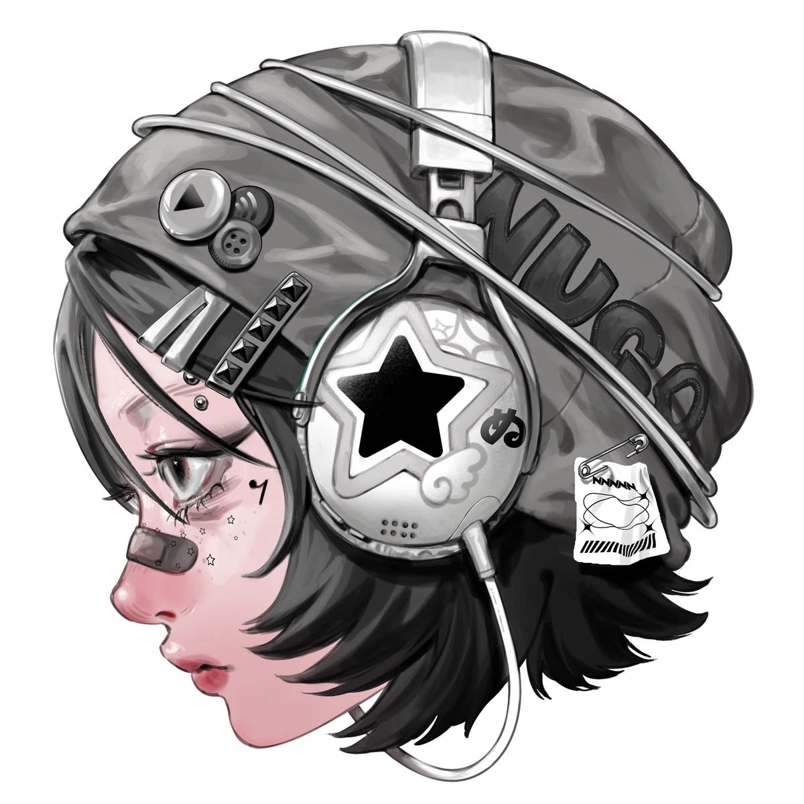
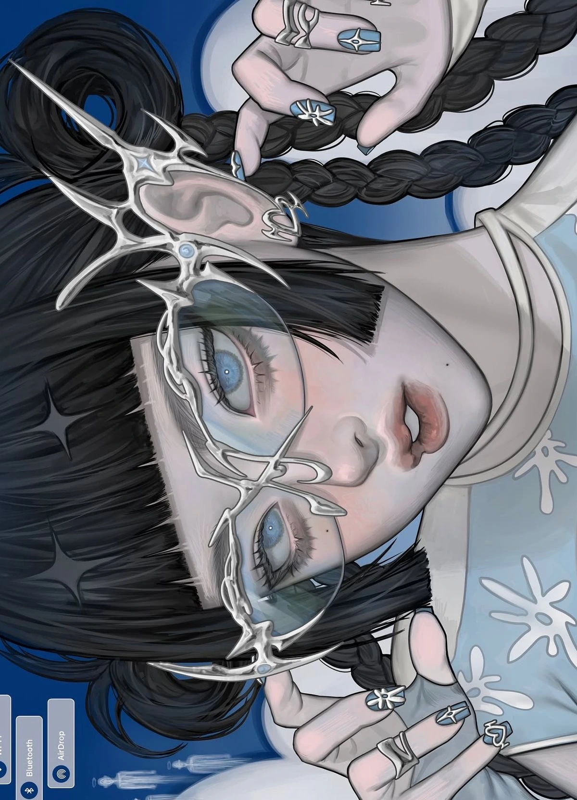
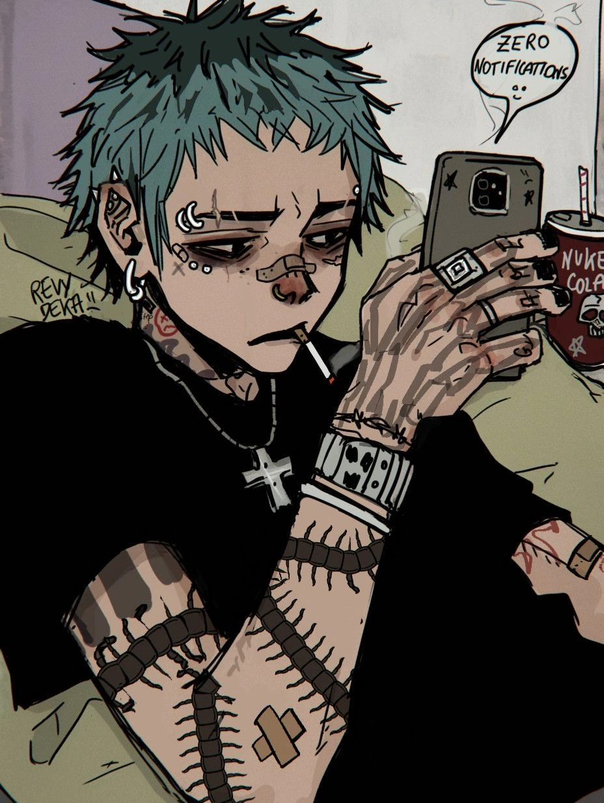

01 / FANCY GIRL● LIVE
BOMB SIGNALINDEPENDENT DIGITAL UNIVERSEEST. 2026 / ONLINE
YXNGJ / DIGITAL IDENTITY — 001
もう一度、
挑戦して。
CREATE · EVOLVE · SURVIVE
A living digital world shaped by code, character and imagination. This is the signal. This is our universe.
YXNGJ®IDENTITY / CLASSIFIED

ONLY ONE / ORIGINAL ENTITYX-01IDENTITY / CLASSIFIED
YXNGJ / SECTOR 01
LIVE CHARACTER FEED
LIVE CHARACTER FEED
SELECT A DESTINATION FROM THE MENU01 / 04
ONE ENTITY / MULTIPLE FORMS
THE X-01 FILES
02 / RED SIGNAL● LIVE

NIGHT SHIFT03 / VOID COMPANION● LIVE

BLUE STATIC04 / CHROME SOUL● LIVE

ZERO NOTIFICATIONSYXNGJ ART DIRECTION / VISUAL ARCHIVE
MY UNIVERSE
CHARACTERS · DIGITAL ART · STREET CULTURE · VISUAL WORLDS
DRIFTING THROUGH THE ARCHIVE
yxngj / VISUAL ARCHIVEMOVE TO INTERACT · SELECT TO EXPAND
YXNGJ INTELLIGENCE DIVISION / 001
XAI COMPANION
A NEW INTELLIGENCE IS TAKING SHAPE
XAI is a planned 3D AI character being created to talk with you, understand requests and help carry out useful tasks. The goal is a natural, interactive companion with a distinct personality — built step by step.
FORMUNDEFINEDMATTERPARTICLE / 01SYNC98.4%
SUBJECTX-01STATUS OBSERVING
AI ENTITY // APPROACHING
SUBJECT REFERENCE / X-01FOUR ANGLES · ARCHIVED

MOVE CLOSER // THE ENTITY RESPONDS TO YOUR PRESENCE ✦
yxngj // RESEARCH DIVISION 04
CYBER LAB
A quiet corner of the network. Explore code, inspect examples, learn.
CODE SHOWCASE READY OFFLINE MODE
CONSOLE — yxngj● OFFLINE / SAFE
yxngj // NODE 01OFFLINE SESSION
operator@yxngj:~$ open code-library
// YXNGJ CODE SHOWCASE // Select a code sample below. // It will appear in this editor. const status = "READY"; console.log(status); > _CRT DISPLAY // CODE PREVIEW
YXNGJ PERSONAL CODE STATION
＋ OPEN CODE EDITOR · SELECT A SAMPLE BELOW
LOCAL ONLY · NO PYTHON
operator@yxngj:~VISUAL COMMAND SIMULATOR
YXNGJ CYBER LAB // OFFLINE MODE
This is a visual command simulator. Choose a code sample from the library to load it into the computer.
[✓] No local Python, file-system or network bridge is connected.
</> sample.py●
1
2
3
4
5
2
3
4
5
OFFLINE EDITOR — write, edit, copy or save a draft in this browser. Code is not executed.
PYTHON BRIDGEDISCONNECTED
CODE EXECUTIONDISABLED
FILE ACCESSDISABLED
MODEOFFLINE
Cyber Lab runs entirely in the browser. It does not connect to Python, your computer's file system, or external network services.
yxngj // SNIPPET ARCHIVE
CODE LIBRARY
Choose a sample. It will load into the computer's code editor.
این کد چه کاری انجام میدهد؟
یک نمونه را انتخاب کن تا کاربرد واقعی، روش اجرا و نکته امنیتی آن را ببینی.
yxngj SECURITY RESEARCHLEARN ETHICALLY // BUILD RESPONSIBLY
yxngj // CREATOR PROFILE · پروفایل سازنده
ABOUT YXNGJ
Cybersecurity · Web Design · Digital Experiences
ENGLISH
I'm YXNGJ — a cybersecurity enthusiast and digital creator focused on website design, web security and interactive experiences. I explore how digital systems work, how to protect them, and how thoughtful design can make technology feel clear and alive.
فارسی
من YXNGJ هستم؛ در زمینه امنیت سایبری، طراحی وبسایت و امنیت وب فعالیت میکنم. به ساخت تجربههای دیجیتال تعاملی، بررسی امنیت سیستمها و ترکیب طراحی بصری با فناوری علاقهمندم. این وبسایت فضایی برای نمایش پروژهها، آزمایشها و کارهای من است.
CYBERSECURITY & WEB
Cybersecurity research, website design, web security and digital experiments.
پژوهش و یادگیری امنیت سایبری، طراحی وبسایت، امنیت وب و اجرای ایدههای دیجیتال.
MY WORK. MY UNIVERSE.
This is my personal portfolio and experimental space. I share selected projects, visual work, interfaces and things I'm building or exploring.
اینجا پورتفولیوی شخصی من است؛ جایی برای انتشار پروژهها، طراحیها، رابطهای کاربری و تجربههایی که میسازم یا بررسی میکنم.
LET'S CONNECT.
For collaborations, questions or project inquiries, reach out:
برای همکاری، پرسش یا صحبت درباره پروژهها از راههای زیر پیام بده:
INSTAGRAM@yxngj ↗ TELEGRAMt.me/yxngj ↗yxngj — CYBERSECURITY / DESIGN / DIGITAL WORLDS